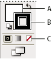

Remove the fill or stroke from an object
- Select the object.
- Click the Fill box or the Stroke box in the Tools panel. Doing so indicates whether you want to remove the object’s fill or its stroke.
- Click the None button in the Tools panel, the Color panel,
or the Swatches panel.

Fill and Stroke boxes
- A.
- Fill box
- B.
- Stroke box
- C.
- None button
Note: You can also click the None icon in the Fill menu or the Stroke Color menu in the Control panel.